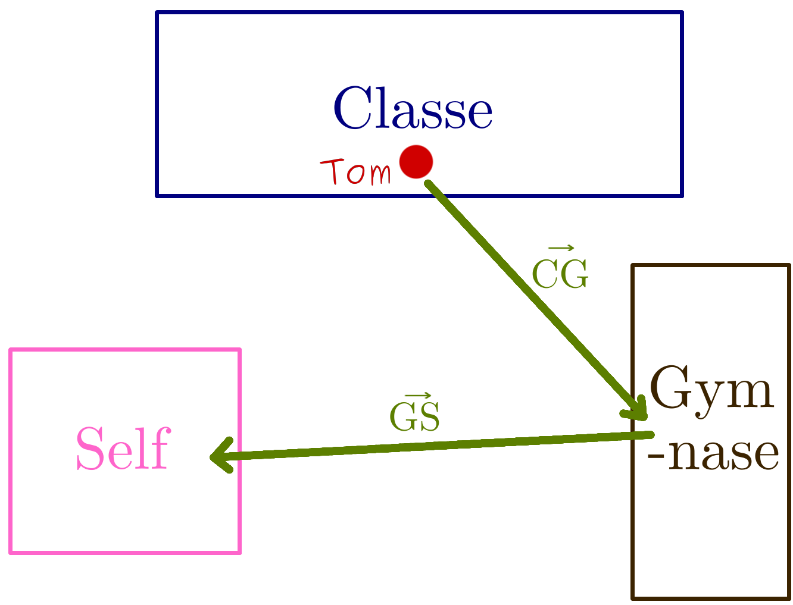
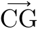
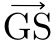
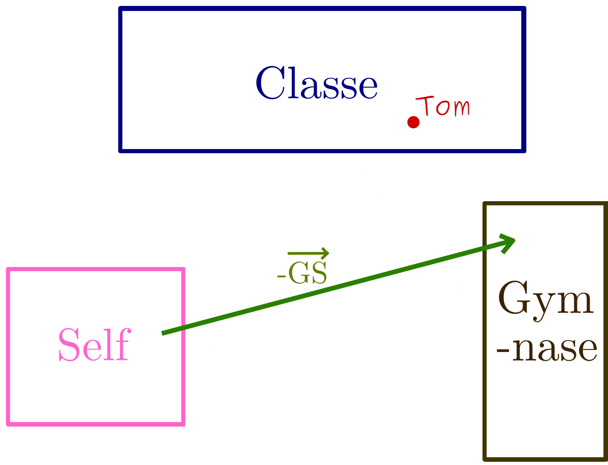
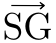
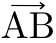
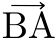
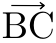
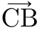
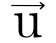

Que signifie le signe ‘moins’ devant un vecteur ?

Ce que vous devez avoir compris avant de lire ce cours:
Un déplacement opposé
Reprenons l’histoire palpitante de la matinée de Tom :

Schéma du déplacement de Paul ce matin
Après avoir été en salle de classe pour un cours de maths
il est allé faire une séance d’EPS au gymnase puis est allé au self.
On a alors défini deux vecteurs :

,

le déplacement de la salle de
classe au gymnase, et le déplacement du gymnase au self.
Si je mettais un ‘moins’ devant le vecteur
?
Qu’est-ce que je serais en train de dire ?
Le signe ‘moins’, dans le monde des vecteurs, signifie l’opposé du
déplacement devant lequel il est placé.
Par exemple, ici je choisis de placer le ‘moins’ devant le vecteur
.
-
signifie donc « l’opposé du déplacement du gymnase au self ». Or
l’opposé de ce déplacement c’est tout simplement un déplacement qui va
du self au gymnase :
 Self"
class="diagram"
title="Cliquez pour agrandir"/>
Schéma représentant le vecteur du déplacement opposé au déplacement
Gymnase -> Self
Comme ce déplacement opposé est égal au déplacement qui va du self
au gymnase on peut le noter

.
Schéma représentant le vecteur du déplacement Self -> Gymnase
On a alors :
-
=
Une inversion du point de départ et du point d’arrivé
Finalement, faire le chemin opposé revient toujours à inverser le
point de départ et le point d’arrivé. Si je fais le chemin opposé de
chez moi au lycée c’est que je vais du lycée vers chez moi, si je fais
le chemin opposé de Poitiers vers Paris c’est que je vais de Paris vers
Poitiers, etc.
On peut donc généraliser pour n’importe quel vecteur :
-

=

-

=

etc.
Une exception toutefois à cette règle :
-

=
-
Les vecteurs écrits avec une seule lettre signifie qu’on ignore les
points de départ et d’arrivé. On ne peut donc alors pas inverser les
deux points (départ et arrivé) pour faire une égalité.
En écrivant
-
=
-
j’ai donc écrit : « l’opposé du déplacement est
égal à l’opposé du déplacement . »
Conclusion
Sans que vous ne l’ayez peut-être remarqué, j’ai pris ici un peu
d’avance sur ce que vous savez déjà… Et oui ! J’ai utilisé le signe
‘égal’, je vous ai présenté ni vu ni connu l’égalité de vecteurs !
Toutefois il est urgent que vous connaissiez par cœur les critères
sur lesquels on se base pour affirmer que deux vecteurs sont égaux.
Autrement vous risquez d’être un peu perdu quand je vais commencer à
vous parler de sommes de vecteurs, soustractions et autres opérations…
Qu'est-ce qu'un vecteur?

Qu'est-ce que deux vecteurs égaux?

{kind=link}
{kind=link}
{kind=link}